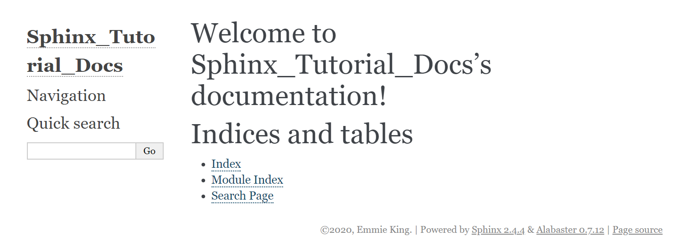

Welcome to SEE’s Getting Started with Sphinx documentation!¶
Getting Starting with Sphinx
In this article, we’ll be going through the basics of generating documentation from docstrings in your Python code, checking your documentation changes, and syncing your changes with a BitBucket repository to automatically update ReadTheDocs.
Step 1: Installing Sphinx
You’ll need to install sphinx. I found it easiest to install using pip.
1 | $ pip install sphinx
|
Step 2: Setup your Project with Quickstart
When you install the sphinx package, a number of command line utilities are setup as well. One of those,
1 | $ sphinx-quickstart
|
will generate a basic configuration file and directory structure for your documentation.
Run this command at the base directory of your project (e.g. the BitBucket repo root). In my example, I have set up a public BitBucket repo under my personal name for development called “PublicAppVeyor”. It will ask you a number of questions that will determine it’s actions.
1 2 3 4 5 6 7 8 9 10 11 12 13 14 15 16 17 18 19 20 21 22 23 24 25 26 27 28 29 30 31 32 33 34 35 36 | Welcome to the Sphinx 2.4.4 quickstart utility.
Please enter values for the following settings (just press Enter to
accept a default value, if one is given in brackets).
Selected root path: .
You have two options for placing the build directory for Sphinx output.
Either, you use a directory "_build" within the root path, or you separate
"source" and "build" directories within the root path.
> Separate source and build directories (y/n) [n]: **y**
The project name will occur in several places in the built documentation.
> Project name: **Sphinx_Tutorial_Docs**
> Author name(s): **Emmie King**
> Project release []: **press enter to accept the default value**
If the documents are to be written in a language other than English,
you can select a language here by its language code. Sphinx will then
translate text that it generates into that language.
For a list of supported codes, see
https://www.sphinx-doc.org/en/master/usage/configuration.html#confval-language.
> Project language [en]: **en**
Creating file .\source\conf.py.
Creating file .\source\index.rst.
Creating file .\Makefile.
Creating file .\make.bat.
Finished: An initial directory structure has been created.
You should now populate your master file .\source\index.rst and create other documentation
source files. Use the Makefile to build the docs, like so:
make builder
where "builder" is one of the supported builders, e.g. html, latex or linkcheck.
|
After the program has run, you’ll notice that the following files and folders have been created in “PublicAppVeyor”:
build folder
source folder
make.bat
Makefile
I decided to create a new folder with the Project Name that you added above and to create a new folder with the base name of the Project and append _py.
Sphinx_Tutorial_Docs [for Sphinx documentation files]
Sphinx_Tutorial_py [for python scripts]
I then moved the 2 sphinx folders and 2 sphinx files into Sphinx_Tutorial_Docs.
Step 3: Adjusting the *conf.py* file
The default conf.py file generated by the quickstart utility requires a few changes.
Tell Sphinx the location of your python package
You will need to indicate in the conf.py file that Sphinx must go “up” one directory level to the python package. Our conf.py file is located in “PublicAppVeyor/Sphinx_Tutorial_Docs/source”. Find the “Path setup” section:
1 2 3 4 5 6 7 8 9 | # -- Path setup --------------------------------------------------------------
# If extensions (or modules to document with autodoc) are in another directory,
# add these directories to sys.path here. If the directory is relative to the
# documentation root, use os.path.abspath to make it absolute, like shown here.
#
# import os
# import sys
# sys.path.insert(0, os.path.abspath('.'))
|
Uncomment the last 3 lines and replace the sys.path with the following AppVeyor server directory structure.
1 2 3 | sys.path.insert(0, os.path.abspath('../..'))
sys.path.insert(0, os.path.abspath('C:\\projects\\publicappveyor\\Sphinx_Tutorial_Docs'))
sys.path.insert(0, os.path.abspath('C:\\projects\\publicappveyor\\Sphinx_Tutorial_py'))
|
Add “Napoleon” to the list of Sphinx Extensions to use
Out of the box, Sphinx only understands docstrings written in traditional reStructuredText. The “Napoleon” extension enables Sphinx to understand docstrings written in 2 other popular formats: Numpy and Google.
Find the “General Configuration” section of your conf.py file.
1 2 3 4 5 6 7 | # -- General configuration ---------------------------------------------------
# Add any Sphinx extension module names here, as strings. They can be
# extensions coming with Sphinx (named 'sphinx.ext.*') or your custom
# ones.
extensions = [
]
|
Replace the last line with:
1 | extensions = ['sphinx.ext.autodoc', 'sphinx.ext.coverage', 'sphinx.ext.napoleon', 'sphinx.ext.intersphinx']
|
Step 4: Update *index.rst* file
At this point, we can actually run the build process to generate our documentation but it would have the generic layout.
{kind=link}
main_OD.py¶
Dummy file to fill in Orbit Determination
-
class
Sphinx_Tutorial_py.OD.main_OD.ExampleClass(name)¶ An example docstring for a class definition.
-
about_self()¶ Return information about an instance created from ExampleClass.
-
-
Sphinx_Tutorial_py.OD.main_OD.about_me(your_name)¶ Return the most important thing about a person. :param your_name: A string indicating the name of the person.
main_IOD.py¶
Dummy file for Initial Orbit Determination
-
class
Sphinx_Tutorial_py.IOD.main_IOD.ExampleClass(name)¶ An example docstring for a class definition.
-
about_self()¶ Return information about an instance created from ExampleClass.
-
-
Sphinx_Tutorial_py.IOD.main_IOD.about_me(your_name)¶ Return the most important thing about a person. :param your_name: A string indicating the name of the person.
main_OutputGen.py¶
Dummy file for Output Generation
-
class
Sphinx_Tutorial_py.OutputGen.main_OutputGen.ExampleClass(name)¶ An example docstring for a class definition.
-
about_self()¶ Return information about an instance created from ExampleClass.
-
-
Sphinx_Tutorial_py.OutputGen.main_OutputGen.about_me(your_name)¶ Return the most important thing about a person. :param your_name: A string indicating the name of the person.